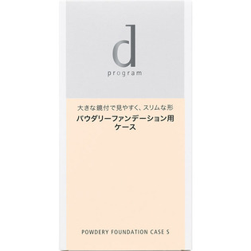

返回列表
产品名称：ｄ プログラム パウダリーファンデーション ケースＳ

資生堂インターナショナル ｄ プログラム パウダリーファンデーション ケースＳ －
メーカー 資生堂インターナショナル
JANコード 4514254099933
商品の特徴
大きな鏡付で見やすく、スリムな形です。
ｄプログラムスキンケアファンデーション（パウダリー）専用のケースです。
成分・分量
－
用法及び用量
【別売りのファンデーション（レフィル）のセット方法】
●ファンデーション（レフィル）の中皿を取り出し、ケースにセットしてお使いください。
●セットするときは、中皿をななめに差し込み、中皿のふちをカチッと音がするまで上から押してください。
●ケースから中皿を取り出すときは、中皿のふちに指の腹をあて、軽く押しながら上へ取り出します。